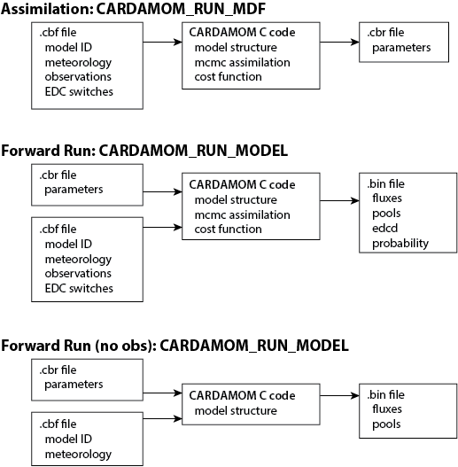

SUMMARY
CARDAMOM community collaborative manual
Anthony Bloom, Gregory R Quetin, Victoria Meyer, Paul Levine, Shuang Ma, Renato Braghiere, Jessie Au, Matthew Worden, Sarah Worden and others
[If you’re making any edits, add your name here!]
Start here! This is the summary of the CARDAMOM community collaborative manual. Each section has a brief summary of a part of the manual and a link to a more detailed source. This manual covers everything from getting started runing CARDAMOM to example analysis and model development. See table of contexts and section curators below. Curators are in charge of (i) starting a new markdown page and moving content there, and (2) getting other people to contribute content where necessary. Use this manual collaboratively with the CARDAMOM team.
Table of Contents
Getting Started with CARDAMOM
***Curator: Jessie Au, Link to section
This section covers everything to get you up and running, including “Installing” CARDAMOM, a must read for using the GitHub repository, and demos in both Matlab and Python for running CARDAMOM.
Running CARDAMOM
***curator: Paul Levine, Link to section
This section outlines setting up CARDAMOM runs now that it is downloaded and tested (see above). The first example will be CARDAMOM run from the command line, followed by descriptions of CARDAMOM wrappers - written in both Matlab and Python. Code availability and description across platforms is on a case-by-case basis. The basic steps of running CARDAMOM consists of an ‘assimilation run’, where CARDAMOM is fed drivers and observations through the CBF. This run produces a set of parameters that are constrained by the observations. Finally, a CARDAMOM forward run uses these parameters to predict the states and fluxes of the carbon cycle through time (Figure).
Notes: main section, and command line example; expect subsections for matlab and python
Step 1: CARDAMOM_MDF
Step 2: CARDAMOM_RUN_MODEL
Saving output at runtime (Matlab)

Figure: Diagram of the basic CARDAMOM run modes.
CARDAMOM binary input file (“cbf.nc”)
***Curator: Matthew Worden, Link to section
The CBF file contains information on the model’s driving meterology and the observations for constraining the model. In addition, the CBF file contains additional information on what model ID to run, uncertainties of observations, parameter priors and uncertainties, and which EDCs to have on. The driving meteorology is often taken from site level measurements or global reanalysis. This section includes the data included in the CBF file and how to create a CBF file to run CARDAMOM
CARDAMOM Output Data and Analysis
***curator: Greg Quetin, link to section
This section covers the standard outputs and formats for both CARDAMOM assimilation (parameters) and the CARDAMOM forward runs (fluxes and states). It includes descriptions of some of the basic analysis techniques avaiable for the CARDAMOM ensemble, including references to Matlab and Python scripts.
Cost Function
***Curator: Anthony Bloom, Link to section
Notes: with as much as possible review from others
Options
Running CARDAMOM in parallel
***Curator: Sarah Worden Link to section
It is common to run CARDAMOM in parallel on remote servers. Generally this is done by running multiple points across multiple CPUs. This section covers some helpful tips and examples for creating multiple point runs and submitting them to servers. Examples include limited information for servers commonly used with CARDAMOM as well as example SLURM submission scripts. See also, CARDAMOM-MAPS.
Perturbation Experiments
***Curator: TBD, Link to section
CARDAMOM C developer guide
***Curator: Shuang Ma, Link to section
This section covers the addition of models, processes, observations, and cost functions to the CARDAMOM C-code base. Before doing any of the following, either git branch and/or backup your C code. Regularly & frequently compile (e.g. CARDAMOM_COMPILE) when making any changes. The section covers making a new model, adding addtional parameters, pools and fluxes, as well as new datasets. Includes examples.
Before getting started, here are some Github Basics to consider.
“Frequently asked questions” and “frequently encountered issues & solutions”
***Curator: Anthony Bloom Link to section
The frequently asked questions section is a collection of common issues and standard solutions to the eccentric inputs and outputs of CARDAMOM.
References
Williams, M., Schwarz, P. A., Law, B. E., Irvine, J., & Kurpius, M. R. (2005). An improved analysis of forest carbon dynamics using data assimilation. Global Change Biology, 11(1), 89–105.
Bloom, A., & Williams, M. (2015). Constraining ecosystem carbon dynamics in a data-limited world: integrating ecological” common sense” in a model-data fusion framework. Biogeosciences, 12(5), 1299.
Bloom, A. A., Exbrayat, J.-F., van der Velde, I. R., Feng, L., & Williams, M. (2016). The decadal state of the terrestrial carbon cycle: Global retrievals of terrestrial carbon allocation, pools, and residence times. Proceedings of the National Academy of Sciences, 113(5), 1285–1290. https://doi.org/10.1073/pnas.1515160113
Quetin, G. R., Bloom, A. A., Bowman, K. W., & Konings, A. G. (2020). Carbon Flux Variability from a Relatively Simple Ecosystem Model with Assimilated Data is Consistent with Terrestrial Biosphere Model Estimates. Journal of Advances in Modeling Earth Systems. https://doi.org/10.1029/2019MS001889
Famiglietti, C.A., Smallman, T.L., Levine, P.A., Flack-Prain, S., Quetin, G.R., Meyer, V., Parazoo, N.C., Stettz, S.G., Yang, Y., Bonal, D. and Bloom, A.A., 2021. Optimal model complexity for terrestrial carbon cycle prediction. Biogeosciences, 18(8), pp.2727-2754.
Bloom, A. A., Bowman, K. W., Liu, J., Konings, A. G., Worden, J. R., Parazoo, N. C., et al. (2020). Lagged effects dominate the inter-annual variability of the 2010-2015 tropical carbon balance (preprint). Biogeochemistry: Land. https://doi.org/10.5194/bg-2019-459
Yin, Y., Bloom, A.A., Worden, J., Saatchi, S., Yang, Y., Williams, M., Liu, J., Jiang, Z., Worden, H., Bowman, K. and Frankenberg, C., 2020. Fire decline in dry tropical ecosystems enhances decadal land carbon sink. Nature communications, 11(1), pp.1-7.
Manual Development Notes
Ad-hoc material to “file” away in manual contents
Fill value conventions: Nans and -9999
DOM = all dead organic C states, SOM = only DALEC soil
Also: link at end of each section to get to next section (e.g. previous, next, and “back to summary”, definitely include that in all files).